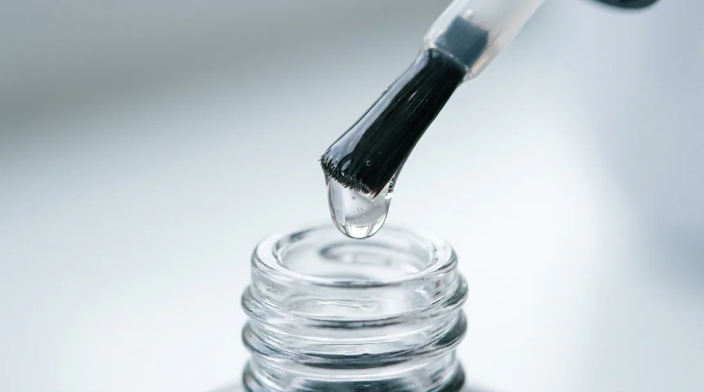
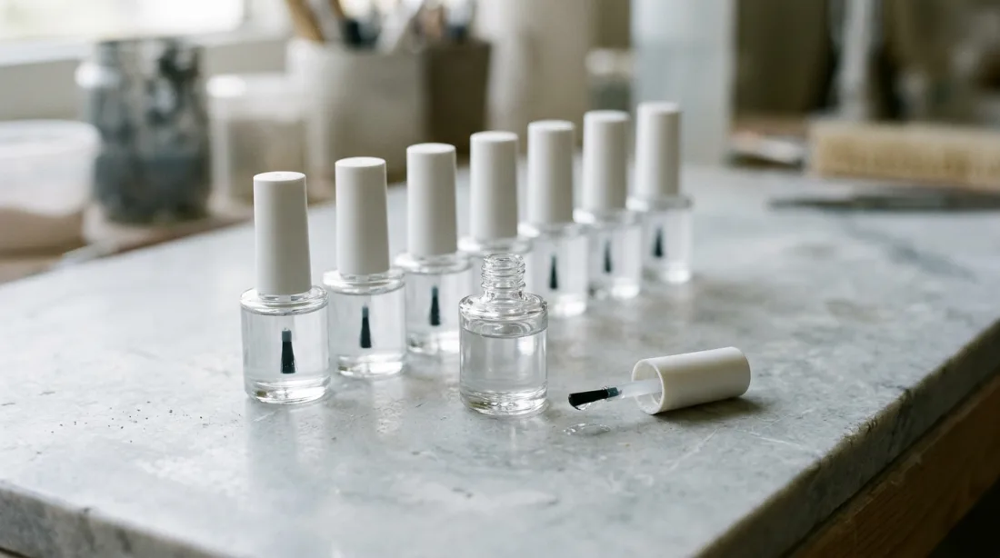
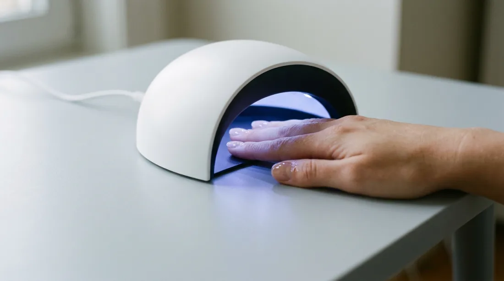
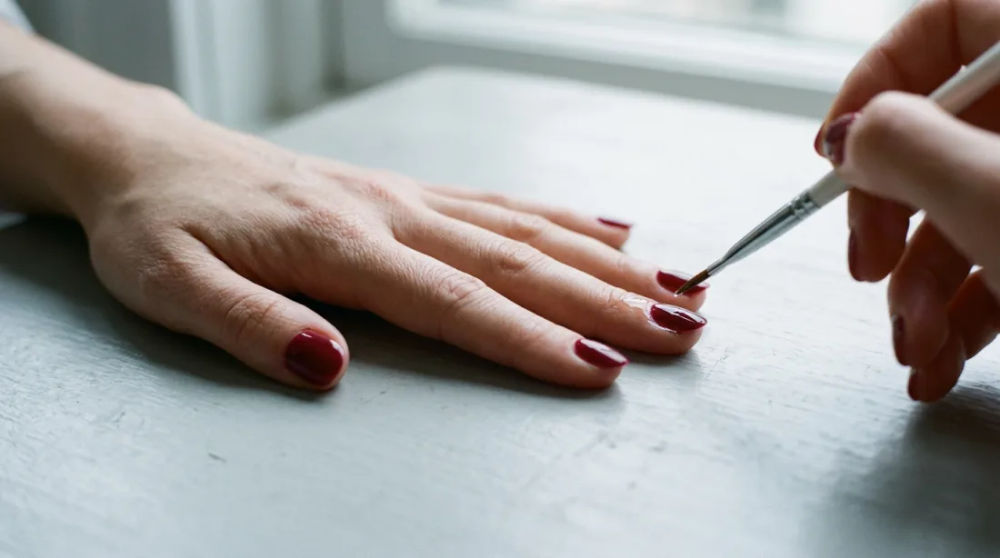
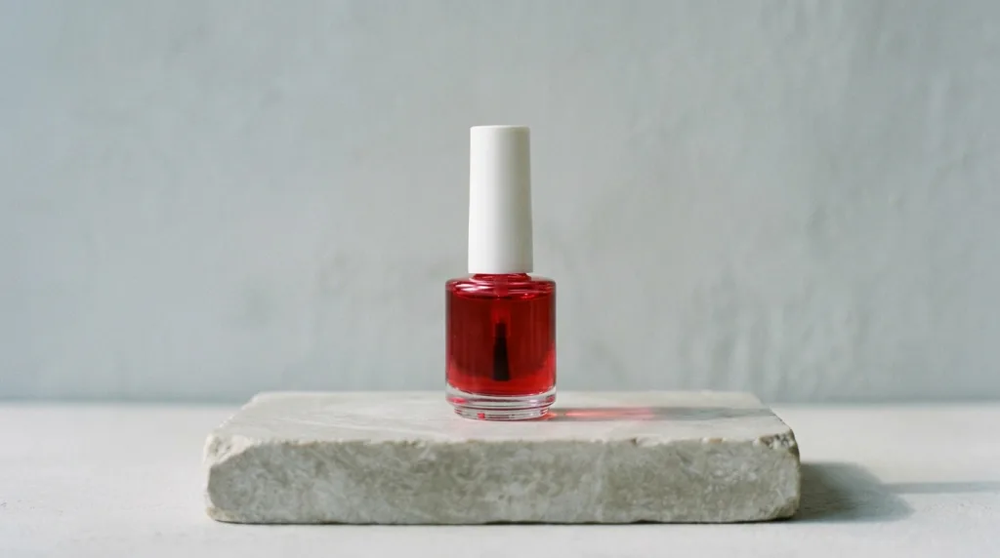
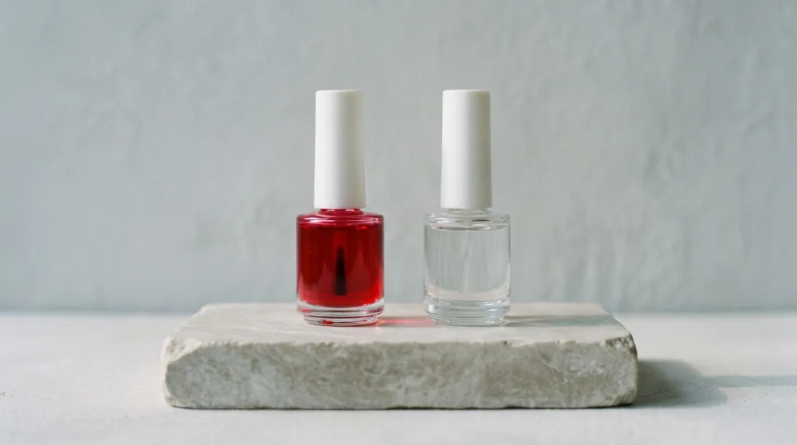

Gooey Sticky Menu

Cerise Jelly is a sheer gel, red the way glass is red when you hold it to the light. One coat lets the nail show through; a second deepens it to the colour of a ripe cherry. Each coat sets under the lamp in a minute, and the shine keeps until the nail grows out, then soaks off in a bowl of acetone in about ten minutes.
- Finish
- Sheer, high gloss
- Wear
- Two to three weeks
- Made
- In small batches, by hand
Glass
Mixed and poured in the studio

Cure
Three thin coats, one lamp- Layers
- A thin base, one coat of cerise or two, the top
- Lamp
- Sixty seconds under LED, two minutes under UV
- Off
- File away the shine, then ten minutes in acetone


Shop
Bottles leave the studio on Fridays
€18

€32